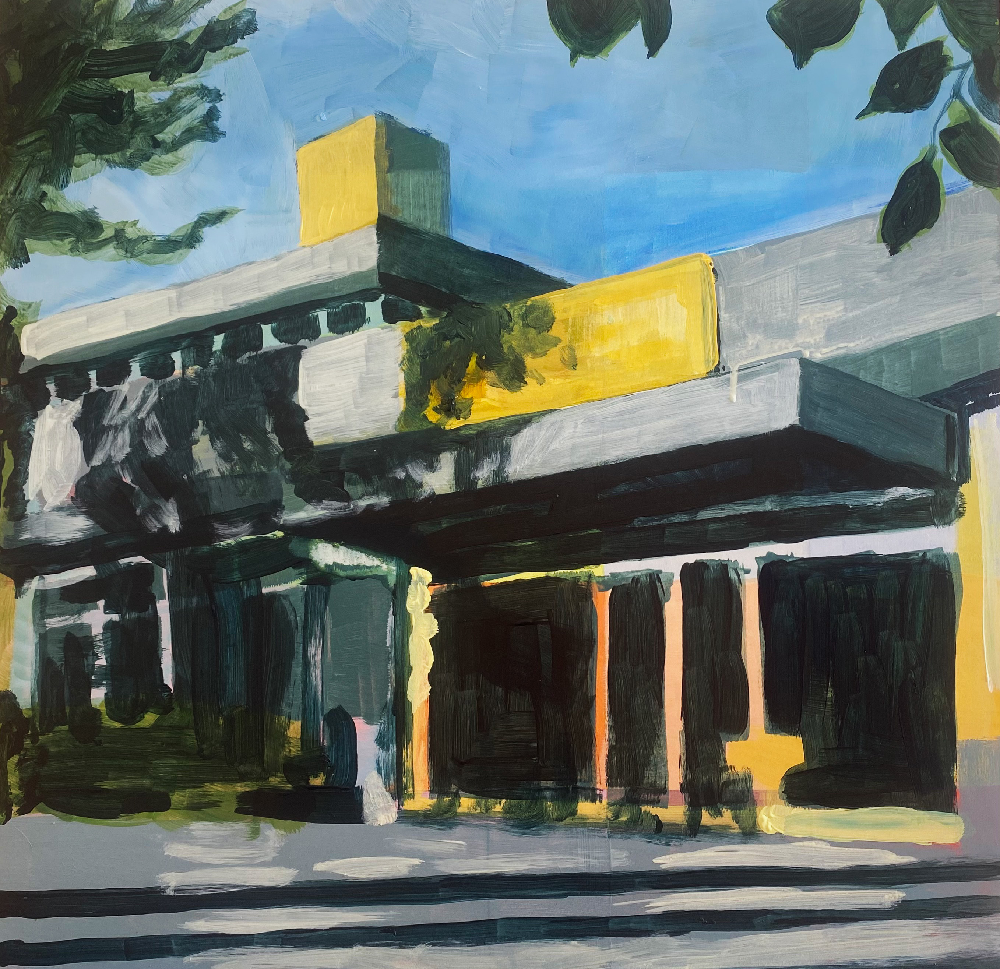
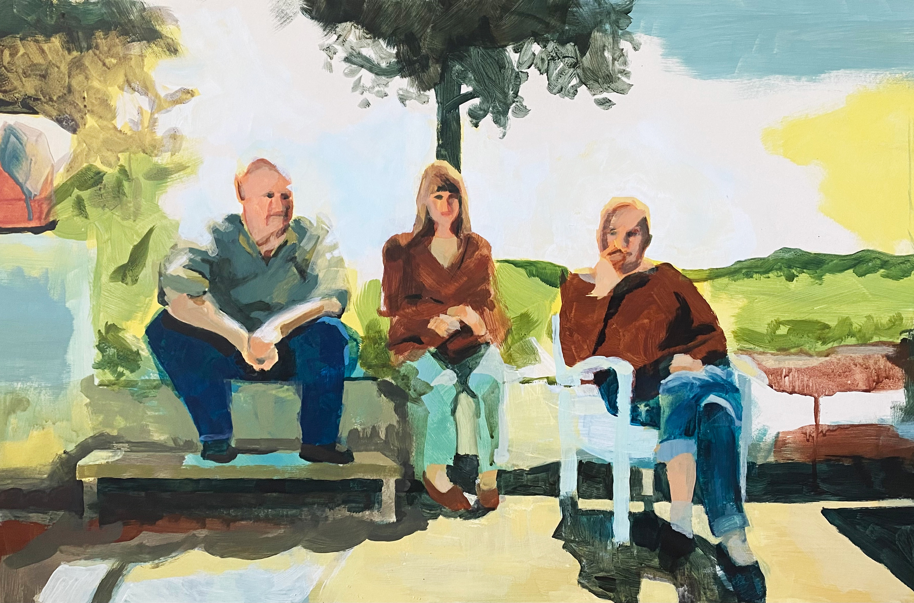
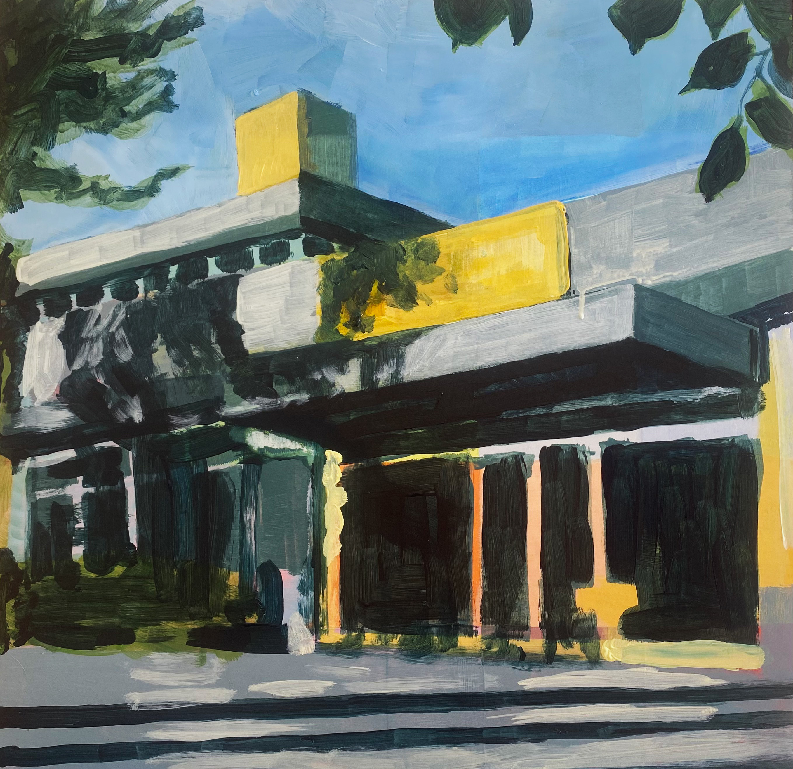
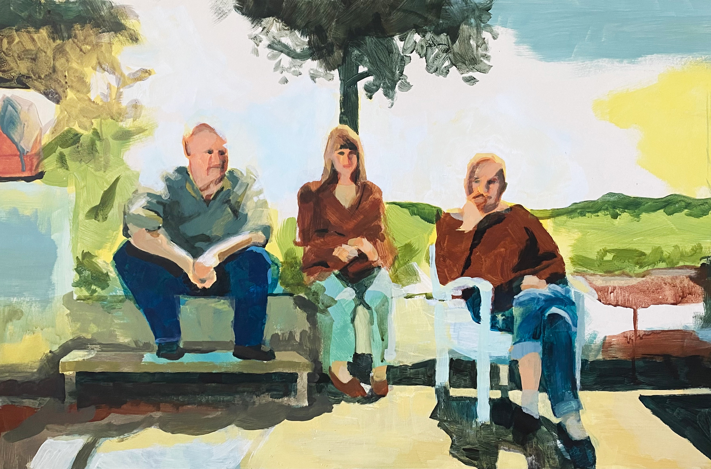

Art
My artistic work explores color, form, sound, and patterns through drawings, painting, textiles, writing and mixed media.
Speech Scientist • Data Analyst • Artist
I am a curious and versatile professional who combines research, art, and consulting. My background in phonetics and speech technology meets my passion for creative expression and practical solutions. I love music and explore human communication — the interplay of form and meaning — across media.
My background is in speech production, focusing on articulatory data and the neurocognitive and physiological foundations of language. With a PhD in phonetics I work at the intersection of speech science, machine learning, and data analysis. Method development, data processing, and statistical modelling are central to my work. I integrate computational analysis with deep knowledge of language variation and speaker diversity. My current focus address ASR and TTS challenges – dialects, accents, stress and intonation patterns, and health-related applications.
I offer services in
I also advise on AI/LLM use in speech applications, showing how multimodal data can drive innovation.
My artistic work explores color, form, sound, and patterns through drawings, painting, textiles, writing and mixed media.
Interested in collaborating, commissioning art, or learning more?
📧 malin.svenssonlundmark@gmail.com
🔗 LinkedIn
 


